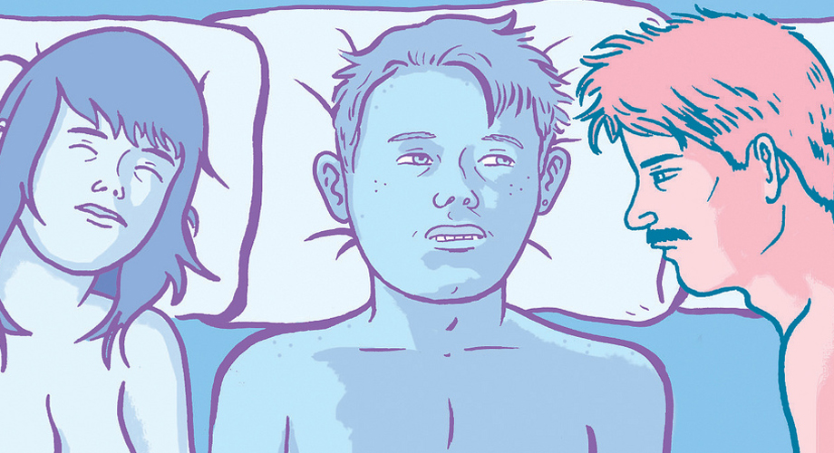

庄子《齐物论》中有这样一段：罔两问景曰：“曩子行，今子止；曩子坐，今子起。何其无特操与？”景曰：“吾有待而然者邪？吾所待又有待而然者邪？吾待蛇蚹蜩翼邪？恶识所以然？恶识所以不然？”意思是：罔两对影子说：“你一会儿走、一会儿停、一会儿战、一会儿坐，为什么会这样呢？”影子对他说：“我是有所依赖才这个样子的，身不由己啊，我像仆人一样的跟随我的主人，我的主人又像仆人一样跟随它的主人。蛇靠它的鳞片才能爬，蝉靠翅膀才能飞。可是单有鳞片、翅膀，也不能爬、不能飞啊！”庄子以这个小故事比喻自然之道是变化之道，没有固定的“主”、固定的“仆”。能够做到对“该依赖的”而不依赖，才是自然、才是解脱。